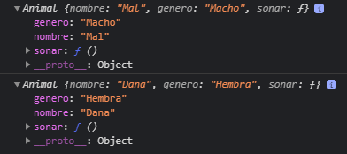
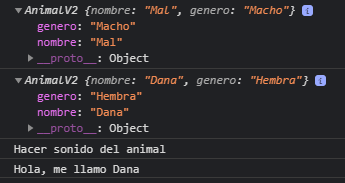

1.- Funcion constructora con métodos
Puede ocupar variables y métodos sin tener que copiar y pegar código para cada objeto .
Usando:
function Animal (nombre, genero) {
/* Atributos */
this.nombre = nombre;
this.genero = genero;
/* Método */
this.sonar = function () { console.log('Hacer sonido del animal'); }
}
/* "new" crea una Instancia del tipo que se le asigne */
const snoop = new Animal('Mal', 'Macho');
const snoopy = new Animal('Dana', 'Hembra');
console.log(snoop);
console.log(snoopy);

2.- Funcion constructora sin métodos
Cada que genero una instancia lleva el método "this.sonar" y "this.saludar", lo cual ocupa memoria, por lo que se puede dejarlos fuera, y de todas maneras se puede llamarlos
Usando:
function AnimalV2 (nombre, genero) {
/* Atributos */
this.nombre = nombre;
this.genero = genero;
}
/* Métodos */
AnimalV2.prototype.sonar = function () { console.log('Hacer sonido del animal'); }
AnimalV2.prototype.saludar = function () { console.log('Hola, me llamo', this.nombre); }
/* "new" crea una Instancia del tipo que se le asigne */
const snoopV2 = new AnimalV2('Mal', 'Macho');
const snoopyV2 = new AnimalV2('Dana', 'Hembra');
console.log(snoopV2);
console.log(snoopyV2);
snoopV2.sonar();
snoopyV2.saludar();
